In many previous examples we illustrated how oomph-lib's Domain and MacroElement objects facilitate the generation of refineable (and non-refineable) meshes in domains with moving, curvilinear boundaries. Consult, for instance:
- The tutorial "How to create refineable meshes in domains with curvilinear and/or
moving boundaries" for a general discussion of the methodology.
- The tutorial "Spatially adaptive solution of the 2D unsteady heat equation with
flux boundary conditions in a moving domain: ALE methods" for an example involving the unsteady heat equation.
- The tutorials
or for examples involving the Navier-Stokes equations.
The two main features of the MacroElement/Domain - based node-update are that, once the curvilinear domain is represented by a Domain object
- Any subsequent mesh refinement will respect the curvilinear domain boundaries.
- The udate of the nodal positions in response to a change in the position of the domain's curvilinear boundaries may be performed by the "black-box" function
Mesh::node_update().
The availability of a "black-box" node-update procedure is very convenient but in some applications it may be desirable (or even necessary) to provide a customised node-update function, either because the mesh deformation generated by the "black-box" procedure is not appropriate or because it is not efficient. The latter problem arises particularly in fluid-structure interaction problems.
In this tutorial we shall demonstrate an alternative node-update technique, based on oomph-lib's AlgebraicNode, AlgebraicElement, and AlgebraicMesh classes. The key feature of this approach is that it allows "each node to update its own
position". This is in contrast to the Domain/MacroElement-based approach in which we can only update the nodal positions of all nodes in the mesh simultaneously – not a particularly sparse operation! [We note that the Node and FiniteElement base classes provide the virtual functions Node::node_update() and FiniteElement::node_update(). These functions are intended to be used for node-by-node or element-by-element node-updates but in their default implementations they are empty. Hence no node-update is performed unless these functions are overloaded in derived classes such as AlgebraicNode and AlgebraicElement.]
Overview
The idea behind the algebraic node-updates is simple: The AlgebraicMesh class (the base class for meshes containing AlgebraicElements and AlgebraicNodes) contains the pure virtual function
which must be implemented in every specific AlgebraicMesh. Its task is to update the position of the node specified by the pointer-valued argument.
The specific implementation of the node-update operation is obviously problem-dependent but it is easy to illustrate the general procedure by considering the collapsible channel mesh sketched below:

The upper figure shows the mesh in the undeformed domain in which wall shape is parametrised by the intrinsic (Lagrangian) coordinate 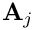 as 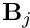 In this configuration each node is located at a certain fraction along the vertical lines across the channel. For instance, the 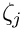-th node (drawn in blue) is located at a fraction of 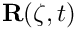 along the straight line that connects reference point 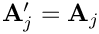 on the bottom wall to reference point 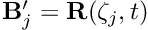 on the flexible upper wall. We note that reference point may be identified by its Lagrangian coordinate 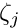 on the wall.
The lower figure shows a sketch of the deformed domain and illustrates a possible algebraic node-update strategy: Given the new wall shape, described by 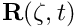, we position each node on the straight line that connects its reference point 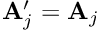 on the lower wall to the reference point 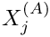 on the deformable upper wall.
To perform this node-update procedure for a specific node, we generally have to store
- A pointer to one (or more)
GeomObject(s)that define the curvilinear domain boundaries.
- A number of node-specific reference values (such as 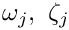, and the 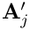 -coordinate of point , 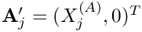, say) that establish the node's position relative to these
GeomObjects.
- A pointer to the
AlgebraicMeshthat implements the node-update procedure.
Since the node-update data is node-specific, we provide storage for it in the AlgebraicNode class – a class that is derived from the Node class. The node-update function itself is shared by many nodes in the mesh and is implemented in AlgebraicMesh::algebraic_node_update(...). This function extracts the node-update parameters, , and and the pointer to the GeomObject that parametrises the wall, wall_pt, say, from the AlgebraicNode passed to it. With these parameters, the position of reference point 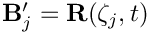 is given by 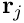 while the coordinates of reference point 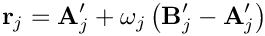 may be obtained from a call to wall_pt->position(...). The nodal position 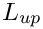 may then be updated via
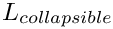
How to use existing AlgebraicMeshes
To use the algebraic node-update capabilities of an existing AlgebraicMesh, all Nodes must be replaced by AlgebraicNodes to allow the storage of the node-specific node-update parameters. Recall that within oomph-lib Nodes are usually created by the elements, using the function FiniteElement::construct_node(...) whose argument specifies the local node number of the newly created Node within the element that creates it. (The specification of the local node number is required to allow the FiniteElement::construct_node(...) function to create a Node with the appropriate number of values and history values. For instance, in 2D Taylor-Hood Navier-Stokes elements, the elements' vertex nodes have to store three values, representing the two velocity components and the pressure, whereas all other nodes only require storage for the two velocity components.)
To ensure that the FiniteElement::construct_node(...) function creates AlgebraicNodes rather than "ordinary" Nodes, we provide the templated wrapper class
which overloads the FiniteElement::construct_node(...) function so that it creates AlgebraicNodes instead. In most other respects, the "wrapped" element behaves exactly as the underlying ELEMENT itself. To use an existing AlgebraicMesh with a certain element type, QTaylorHoodElement<2>, say, we simply "upgrade" the element to an AlgebraicElement by specifying the element type as AlgebraicElement<QTaylorHoodElement<2> >.
The changes to an existing driver code that performs the node update by the default Domain/MacroElement methodology are therefore completely trivial. You may wish to compare the driver code collapsible_channel.cc, discussed in an earlier example, to the driver code collapsible_channel_algebraic.cc in which the fluid domain is discretised by the MyAlgebraicCollapsibleChannelMesh, discussed below.
How to create a new AlgebraicMesh – a basic example
To illustrate how to create a new AlgebraicMesh, we will now discuss the implementation of the MyAlgebraicCollapsibleChannelMesh – an AlgebraicMesh - version of the CollapsibleChannelMesh, used in the earlier example.
The class definition
We construct the mesh by multiple inheritance from the AlgebraicMesh base class, and the already-existing CollapsibleChannelMesh. The constructor first calls the constructor of the underlying CollapsibleChannelMesh (thus "recycling" the basic mesh generation process, i.e. the generation of nodes and elements etc.) and then adds the algebraic node-update information by calling the function setup_algebraic_node_update().
We declare the interface for the pure virtual function algebraic_node_update(...), to be discussed below, and implement a second pure virtual function, AlgebraicMesh::update_node_update(), that may be used to update reference values following a mesh adaptation. Since the current mesh is not refineable, we leave this function empty and refer to another example for a more detailed discussion of its role.
The protected member function setup_algebraic_node_update() will be discussed below.
Setting up the algebraic node update
When the function setup_algebraic_node_update() is called, the constructor of the underlying CollapsibleChannelMesh will already have created the mesh's elements and nodes, and the nodes will be located at their initial positions in the undeformed domain.
To set up the algebraic node-update data, we start by extracting the lengths of the upstream rigid section, 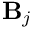, and the length of the collapsible segment, 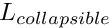, from the CollapsibleChannelDomain:
Next, we loop over all AlgebraicNodes in the mesh and determine their current positions:
If the j -th node is located in the "collapsible" section of the mesh we determine its reference coordinate, , on the wall and determine the coordinates of its reference point from the GeomObject that represents the moving wall.
Just to be on the safe side, we check that the wall is actually in its undeformed configuration, as assumed.
Next, we package the data required for the node-update operations (the pointers to GeomObject(s) and the reference values) into vectors. In the present example, the node-update operation only involves a single GeomObject:
We have three reference values: The - coordinate of point ,
as well as the fractional height, 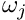,
and the reference coordinate, , along the wall:
The vectors of reference values and geometric objects are then passed to the node, together with the pointer to the mesh (this) that implements the node-update function.
The node-update function
The function algebraic_node_update(...) reverses the setup process: It extracts the node-update data from the AlgebraicNode and updates its position at the t -th previous time-level:
We start by extracting the vectors of reference values and GeomObjects involved in this node's node-update, using the functions AlgebraicNode::vector_ref_value() which returns a Vector of reference values, and the function
AlgebraicNode::vector_geom_object_pt() which returns a Vector of pointers to GeomObjects.
Next, we translate these into local variables,
and obtain the current wall position from the wall GeomObject.
Finally, we update the nodal position:
Done!
Comments and Exercises
Comments
- Element-by-element and global node updates:
As explained above, the re-implementation of the (empty)Node::node_update()function byAlgebraicNode::node_update()allows each node to "update its own position". TheAlgebraicMeshandAlgebraicElementclasses provide their own re-implementation of thenode_update()functions in theMeshandFiniteElementclasses, and perform the node-updates by executing theAlgebraicNode::node_update()function of their constituent nodes.
- Default node-update function:
We stress that, in the above example, it was only necessary to set up the node-update data for the nodes in the central "collapsible" part of the mesh as they are the only modes whose position is affected by the motion of the curvilinear boundary. This is possible because theAlgebraicNodeconstructor provides default assignments for the node-update data. In particular, the pointer to the Mesh that performs the node update is initialised by a pointer to the (static instantiation of a)DummyMeshwhoseAlgebraicMesh::algebraic_node_update(...)andAlgebraicMesh::update_node_update(...)functions are empty. This ensures that nodes for which these default assignments are not overwritten stay at their original position when the node udate is performed. This implementation provides a sensible default behaviour for the node update.
- Multiple node-update functions:
In the simple example considered here, a single node-update function was sufficient to update the positions of all moving nodes in the mesh. In more complicated meshes, it may be be necessary to provide different node-update functions for nodes that are located in different parts of the mesh. To facilitate the implementation of such cases, it is possible to specify an identifier for the node-update function when calling theAlgebraicNode::add_node_update_info(...)function, using its alternative interfaceWhen implementing thevoid AlgebraicNode::add_node_update_info(const int& id, // ID of the node-update fctAlgebraicMesh* mesh_pt, // pointer to meshconst Vector<GeomObject*>& geom_object_pt, // vector of geom objectsconst Vector<double>& ref_value); // vector of ref. valuesAlgebraicMesh::algebraic_node_update(...)function for a mesh that contains multiple node-update functions, the ID of the node-update function associated with a particular node can be obtained fromAlgebraicNode::node_update_fct_id(), allowing the node-update function to take the appropriate action. (As an example, consider the implementation of the algebraic node-update function for theRefineableAlgebraicFishMeshin which different node-update functions are used to update the position of nodes in the fish's "body" and in its "tail".) If theAlgebraicNode::add_node_update_info(...)function is called without specifying an ID, a default ID of 0 is assigned.
- Consistency between multiple node-update functions:
If a mesh contains multiple node-update functions, it is likely that some nodes are located at the interface between regions that are updated by different node-update functions. As indicated by the"add_..."in theAlgebraicNode::add_node_update_info(...)function,AlgebraicNodesmay be associated with multiple node-update functions, though the different node-update functions associated with a node must, of course, give the same result. This may be verified by calling theAlgebraicNode::self_test()function for all nodes in anAlgebraicMesh.
Note: In refineableAlgebraicMeshes(discussed in more detail below),AlgebraicNodesmust be associated with all possible node-update functions to ensure that the reference values for newly created nodes are determined correctly during the adaptive mesh refinement.
- Adaptivity:
RefineableAlgebraicMeshesmay be created by multiple inheritance from a suitableRefineableMeshbase class (e.g. theRefineableQuadMeshclass), and setting up the required tree representation of the coarse initial mesh, exactly as for "ordinary" meshes (see the tutorial "How to create simple refineable meshes" for details). As an example, here is the class definition for a refineable version of theMyAlgebraicCollapsibleChannelMeshdiscussed above:
//===========start_refineable_algebraic_collapsible_channel_mesh======/// Refineable version of the CollapsibleChannel mesh with/// algebraic node update.//====================================================================template<class ELEMENT>class MyRefineableAlgebraicCollapsibleChannelMesh :public RefineableQuadMesh<ELEMENT>,public virtual MyAlgebraicCollapsibleChannelMesh<ELEMENT>{public:/// Constructor: Pass number of elements in upstream/collapsible//// downstream segment and across the channel; lengths of upstream//// collapsible/downstream segments and width of channel, pointer to/// GeomObject that defines the collapsible segment, function pointer/// to "boundary layer squash function", and pointer to/// TimeStepper (defaults to the default timestepper, Steady).MyRefineableAlgebraicCollapsibleChannelMesh(const unsigned& nup,const unsigned& ncollapsible,const unsigned& ndown,const unsigned& ny,const double& lup,const double& lcollapsible,const double& ldown,const double& ly,GeomObject* wall_pt,TimeStepper* time_stepper_pt=&Mesh::Default_TimeStepper) :CollapsibleChannelMesh<ELEMENT>(nup, ncollapsible, ndown, ny,lup, lcollapsible, ldown, ly,wall_pt,time_stepper_pt),MyAlgebraicCollapsibleChannelMesh<ELEMENT>(nup, ncollapsible, ndown, ny,lup, lcollapsible, ldown, ly,wall_pt,time_stepper_pt){// Build quadtree forestthis->setup_quadtree_forest();}};
Note that none of the functions defined in the non-refineable version of this mesh have to be re-implemented. This raises the question of how the node-update data for any newly created nodes are determined when the mesh is refined. By default, the reference values for any newly createdAlgebraicNodesare determined by interpolation from the node's "father element". Furthermore, it is assumed
that the sameGeomObjectsare involved in the node-update function for the newly created node.
This default behaviour is appropriate for the mesh considered here. In other cases, (e.g. in the corresponding fluid-structure interaction problem), some or all of the node-update data may have to be recomputed when the mesh is adapted. Such updates may be performed by theAlgebraicMesh::update_node_update(...)function which is executed automatically whenever a refineableAlgebraicMeshis adapted.
- Node updates for hanging nodes:
Recall that refineable meshes may contain hanging nodes whose position is constrained by its "master nodes". When theAlgebraicNode::node_update(...)function is called for a hanging node, it first updates the position of its master nodes (using their own node-update functions) and then updates its own constrained position accordingly.
- Automatic finite-differencing with respect to geometric Data:
Algebraic node updates are particularly useful in fluid-structure interaction problems since they allow the development of "sparse" node update procedures in which each (solid mechanics) degree of freedom only affects the position of a small number of nodes in the fluid mesh. We will discuss fluid-structure interaction problems in more detail elsewhere but stress already that one of the major complications in such problems (and, in fact, in any free-boundary problem) is the need to evaluate the so-called shape derivatives – the derivatives of the "bulk" (here the Navier-Stokes) equations with respect to the degrees of freedom (here the nodal positions in the wall mesh) that affect the position of the nodes in the "bulk" mesh.
The algebraic node update procedures discussed above are sufficiently general to handle such interactions. The shape/position of theGeomObjectsthat are involved in anAlgebraicNode'snode update, may depend on unknowns in the overall problem. Such unknowns constitute aGeomObject'sgeometricDatawhich may be obtained from its member functionGeomObject::geom_data_pt(...).AlgebraicElementsuse finite differencing to include the shape derivatives (i.e. the derivatives of the residuals of the underlying (wrapped) element with respect to the geometricDatainvolved in the element's node update) into the element's Jacobian matrix.
- Additional sanity checks and other generalisations:
TheMyAlgebraicCollapsibleChannelMeshand its refineable equivalent are slightly simplified versions of the meshes inoomph-lib'ssrc/meshesdirectory. These meshes contain a number of additional sanity checks that we omitted here for the sake of brevity. Furthermore, these meshes can be used withGeomObjectsthat comprise "sub-"GeomObjects, a feature that is essential in problems with proper fluid-structure interaction. We will discuss this in another example.
Exercises
- If you inspect the
source code for theMyAlgebraicCollapsibleChannelMesh, you will notice that the mesh has an additional constructor that allows the specification of the "boundary layer squash function" first introduced in the originalCollapsibleChannelMesh. Explain why in theAlgebraicMeshversion of this mesh, the function pointer to the "boundary layer squash function" can only be specified via the constructor – the access function is deliberately broken.
Source files for this tutorial
- The source files for this tutorial are located in the directory:
demo_drivers/navier_stokes/collapsible_channel/
- The driver code is:
demo_drivers/navier_stokes/collapsible_channel/collapsible_channel_algebraic.cc
PDF file
A pdf version of this document is available.